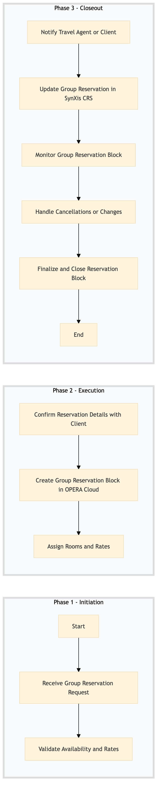

| Role | Steps |
|---|---|
| Revenue Manager | 1.1 1.2 2.1 2.2 2.3 3.1 3.2 3.3 3.4 3.5 |
| Step | Name | Role | System | Input | Output | KPI | Dec? | Exc? | Pain Point / Risk |
|---|---|---|---|---|---|---|---|---|---|
| 1.1 | Receive Group Reservation Request | Revenue Manager | SynXis CRS | Group reservation request from a travel agent or client | Reservation details logged in SynXis CRS | Less than 5 minutes to log the request | N | Y | Handling conflicting requests from multiple sources |
| 1.2 | Validate Availability and Rates | Revenue Manager | Oracle OPERA Cloud, IDeaS G3 RMS | Reservation details from SynXis CRS | Availability report with rates | Less than 10 minutes to generate the report | Y | N | Ensuring accurate rate calculations |
| 2.1 | Confirm Reservation Details with Client | Revenue Manager | Marriott Bonvoy CRM, Book4Time | Availability report and rates | Confirmed reservation details | Less than 30 minutes to confirm details | Y | N | Negotiating terms with clients |
| 2.2 | Create Group Reservation Block in OPERA Cloud | Revenue Manager | Oracle OPERA Cloud | Confirmed reservation details | Group reservation block created in OPERA Cloud | Less than 15 minutes to create the block | N | Y | Handling large group sizes |
| 2.3 | Assign Rooms and Rates | Revenue Manager | Oracle OPERA Cloud, IDeaS G3 RMS | Group reservation block in OPERA Cloud | Rooms assigned with rates | Less than 20 minutes to assign rooms and rates | Y | N | Room availability conflicts |
| 3.1 | Notify Travel Agent or Client | Revenue Manager | Marriott Bonvoy CRM, Book4Time | Assigned rooms and rates | Confirmation email sent to client | Less than 5 minutes to send confirmation | N | Y | Ensuring correct contact information |
| 3.2 | Update Group Reservation in SynXis CRS | Revenue Manager | SynXis CRS | Assigned rooms and rates | Updated reservation details in SynXis CRS | Less than 10 minutes to update the reservation | N | Y | Synchronization issues between systems |
| 3.3 | Monitor Group Reservation Block | Revenue Manager | Oracle OPERA Cloud, IDeaS G3 RMS | Ongoing reservation block status | Reservation block status report | Daily review of the block status | Y | N | Handling last-minute changes |
| 3.4 | Handle Cancellations or Changes | Revenue Manager | Oracle OPERA Cloud, SynXis CRS | Cancellation or change request from client | Updated reservation details | Less than 15 minutes to handle the request | Y | Y | Compensating for lost revenue |
| 3.5 | Finalize and Close Reservation Block | Revenue Manager | Oracle OPERA Cloud, SynXis CRS | Completed reservation block details | Closed reservation block in both systems | Less than 5 minutes to finalize the block | N | Y | Ensuring all data is accurate |
This process outlines the steps involved in managing group reservations and blocks at a full-service Marriott hotel using Oracle OPERA Cloud PMS and other key systems.